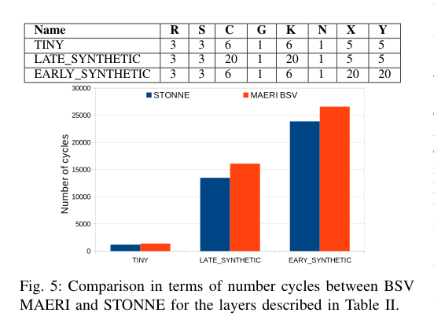
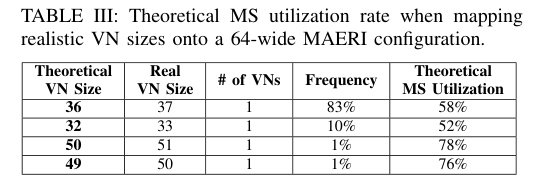
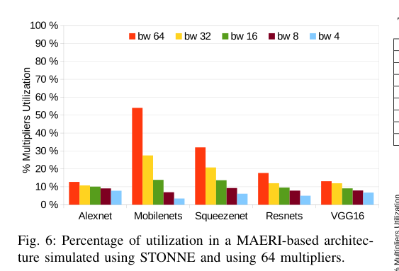
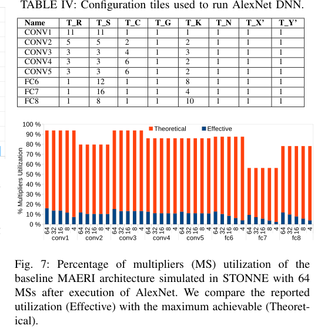
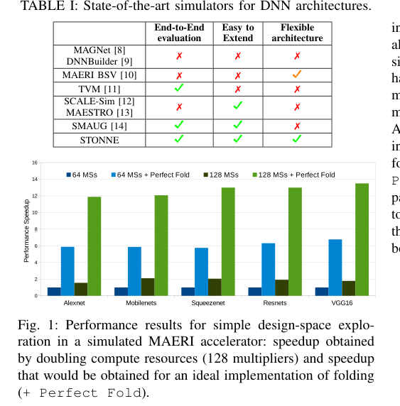

本报告由大模型自动生成，可能存在理解、归纳或数据转述错误；请以原论文为准。 STONNE: Enabling Cycle-Level Microarchitectural Simulation for DNN Inference AcceleratorsFrancisco Muñoz-Martínez, José Luis Abellán, Manuel E. Acacio, Tushar Krishna · IEEE International Symposium on Workload Characterization · 2021 · 原文 · PDF 报告模型：gemini-3.1-pro-preview / high 这是一篇关于神经网络加速器架构仿真器 STONNE 的详细解读。本文将按照论文的逻辑主线，依次从问题背景、仿真器框架设计、具体架构建模，到模型验证与性能瓶颈分析进行连贯的阐述。 一、 引言与问题背景在深度神经网络（Deep Neural Networks, DNNs）的推理（Inference）过程中，核心的计算任务是海量的乘加运算（Multiply-Accumulate, MAC，原文未说明单位）。在这个过程中，一个已经训练好的模型被用来对新的输入数据进行预测。为了将庞大的神经网络映射到硬件上，网络层通常会被划分为多个切片（Tile）。在这里，切片是指在给定时间步内，能够被硬件加速器片上存储和计算单元容纳的一组神经元输入、权重和部分和（Partial Sums, psums）。这些数据在加速器功能单元之间传递和复用的模式被称为数据流（Dataflow）。 第一代 DNN 推理加速器（例如谷歌的 TPU）通常采用刚性架构，即具有固定大小的乘加阵列和固定的片上网络，专门为某一种特定的数据流优化。然而，现代 DNN 模型各层的大小和类型差异巨大，刚性架构在处理不匹配的网络层时，会导致计算单元利用率极低和数据复用率下降。为了解决这个问题，学术界提出了如 FlexFlow、MAERI 和 SIGMA 等灵活加速器架构（Flexible DNN Accelerator Fabrics）。这类架构允许通过动态重构互连网络，在同一硬件底座上创建大小可变的计算集群，从而高效地映射不同的数据流和切片划分。 但灵活性的提升带来了架构复杂度的急剧增加。在最终流片制造 ASIC（专用集成电路）或部署到 FPGA 之前，研究人员迫切需要一款工具来探索庞大的设计空间。传统的计算机体系结构研究高度依赖周期级精确（Cycle-accurate）的仿真器（如针对 CPU/GPU 的 gem5），但在灵活 DNN 加速器领域，此前缺乏开源且详细的架构仿真工具。现有的仿真器（如 SCALE-Sim）多针对刚性架构开发，无法直接支持灵活网络的模拟。本文正是为了填补这一空白，提出了一款高模块化、高可扩展的周期级精确仿真框架——STONNE（Simulation TOol of Neural Network Engines），并支持端到端（End-to-end）的全模型评估。 二、 STONNE 仿真器框架设计为了实现端到端的评估，STONNE 是使用 C++ 开发的，并与 Caffe 深度学习框架进行了整合。整个仿真流程由三个核心模块构成，数据和控制流在它们之间依次传递： 首先是输入模块（Input Module）。由于 STONNE 被作为 Caffe 的后端计算平台，用户只需在 Caffe 的网络定义文件（ 其次是框架的核心，即灵活 DNN 加速器模块（Flexible DNN Accelerator，或称仿真引擎）。STONNE 在这一层抽象出了一个通用的灵活加速器硬件模型。在硬件结构上，它包含三个主要层级部件：
最后是输出模块（Output Module）。逐周期仿真结束后，该模块会统计并输出执行时间（周期数）、计算单元利用率，以及对 SRAM、连线和 FIFO 队列的访问次数。在这个执行模式下，仿真器不仅输出硬件统计数据，还会把计算结果返回给 Caffe，完成实际的图像分类预测任务。原文提到作者正在扩展利用 Accelergy 框架来报告面积和能耗，但在本文主体实验中，输出仍以性能（周期数和利用率）为主。 三、 MAERI 架构在 STONNE 中的建模与映射为了展示 STONNE 的能力，作者在仿真器中具体实现了一个名为 MAERI 的前沿灵活加速器架构模型。MAERI 中的基本计算原语被称为虚拟神经元（Virtual Neuron, VN）。VN 是一个逻辑概念，指在硬件中动态配置出来的一组乘法器集群，专门用于计算某一个特定的输出神经元。 在 MAERI 的具体实现中，各层级部件被细化如下：
切片映射与折叠机制的数学表达 当 MAERI 运行神经网络时，需要定义切片如何映射到上述硬件资源上。作者定义了一个切片参数元组：。
折叠（Folding）的定义与挑战 如果在映射时，一个 VN 的大小无法容纳整个 filter 的大小（即 的情况，公式中各变量含义同上，无量纲），硬件就必须启用**折叠（Folding）机制。折叠是指将一个大神经元的计算在时间上拆分为多个连续的步骤。每个步骤计算出的部分和（psums）必须被写回到预取缓冲区（PB）中临时存储；在下一个时间步，这些部分和会被重新读取，并通过乘法器网络（MN）中配置为转发器（Forwarder）**的额外 MS 节点重新注入计算流中，与新的结果进行累加。 四、 模型验证与真实网络性能评估在实验阶段，作者首先进行了准确性验证。他们将 STONNE 中的 MAERI 模型与公开可用的基于 BSV（BlueSpec SystemVerilog）编写的真实 RTL 原型进行了对比。由于 BSV 硬件原型的刚性约束，作者只能在比较受限的配置下对比（设定 32 个乘法器，4 个输入/输出端口）。 通过运行三种不同的合成网络层（见论文图 5），STONNE 报告的总执行周期数与真实的 BSV 原型平均只有 15% 的差异（范围从 11% 到 19%）。作者指出，这一微小差异主要源于软件测试台的设计约束：BSV 的测试代码没有充分并行利用所有可用的输入端口来喂给硬件数据，而 STONNE 的仿真模型充分利用了带宽。端到端验证也证实，STONNE 驱动执行 ImageNet 数据集得到的分类结果与传统 CPU 执行完全一致。  基于真实 DNN 的性能瓶颈发现 STONNE 最核心的价值在于能够在早期发现架构设计中的致命瓶颈。作者在仿真器中配置了 64 个乘法器（MS）的基线 MAERI 架构，并运行了 AlexNet 等 5 个真实的 DNN 模型。对于每一层，作者使用外部搜索工具 mRNA 来获取最优的切片配置。 作者首先计算了理论乘法器利用率（Theoretical MS Utilization）。以 AlexNet 等模型中最常见的切片情况为例（见论文表 III），一个 VN 的理论大小为 36 个 MS。因为实际运行中 98% 的时间都需要折叠，所以必须额外分配 1 个 MS 作为转发器，实际 VN 大小变为 37。在 64 个 MS 的硬件上，只能放下一个这样的 VN，剩下 27 个 MS 处于闲置状态，此时理论利用率仅为 。  然而，STONNE 的仿真结果揭示了更严重的问题：有效利用率（Effective Utilization）远低于理论上限。论文图 6 展示了不同 PB 读写带宽下 5 个 DNN 模型的有效利用率。即使在没有带宽瓶颈的理想硬件配置下（输入/输出带宽均为 64 个元素/周期），5 个模型的平均利用率也只有 25%，而在 AlexNet 和 VGG-16 上甚至没有突破 10%（见图 7 中的蓝色条柱）。   通过分析 STONNE 输出的详细统计数据，作者锁定了问题的根源：MAERI 现有的折叠机制设计在流水线调度上存在硬伤。由于折叠机制要求部分和必须通过归约网络（RN）一路写回到预取缓冲区（PB），再重新分配经过分发网络（DN）回到乘法器网络（MN）作为转发操作数，这种跨越整个片上网络的深度依赖打破了流水线作业的连续性。乘法器在等待上一轮次的部分和绕场一周返回时，只能处于空闲等待状态，导致计算资源的大量浪费。论文的图 1 也印证了这一点：如果在仿真中开启理想的“完美折叠”（消除部分和回写的惩罚时间），性能可以飙升 6.1 倍（对于 64 MSs 配置）和 12.6 倍（对于 128 MSs 配置）。  五、 总结与主线回顾纵观全文，这篇文章的逻辑主线非常清晰：为了解决刚性加速器无法高效适应多变神经网络的问题，学术界提出了灵活的 DNN 加速器（如 MAERI）。但这带来了设计空间的爆炸，而此时缺乏能够快速迭代、周期级精确的开源架构仿真工具。作者以此为契机开发了高度模块化的 STONNE 仿真框架，并实现了与 Caffe 的端到端整合。 作者并未止步于提出工具，而是用 STONNE 实际去重构和仿真了最先进的 MAERI 架构。通过高保真的仿真与详尽的数据统计，作者戳破了理论上的乐观预期，发现了 MAERI 架构由于折叠机制引发的流水线气泡问题，导致实际硬件利用率断崖式下跌至平均 25%（跨 5 个 DNN 模型），这最终转化为高达 610% 的最大性能退化。这一发现不仅证明了 STONNE 作为设计空间探索工具的巨大价值，也为后续的硬件架构改进指明了方向（例如设计无需回写预取缓冲区的新型归约网络）。论文目前的局限性在于其验证规模相对受限（仅对比了受限配置的 BSV 代码），并且面积和能耗的评估工具仍在基于 Accelergy 框架进行扩展集成中。 |